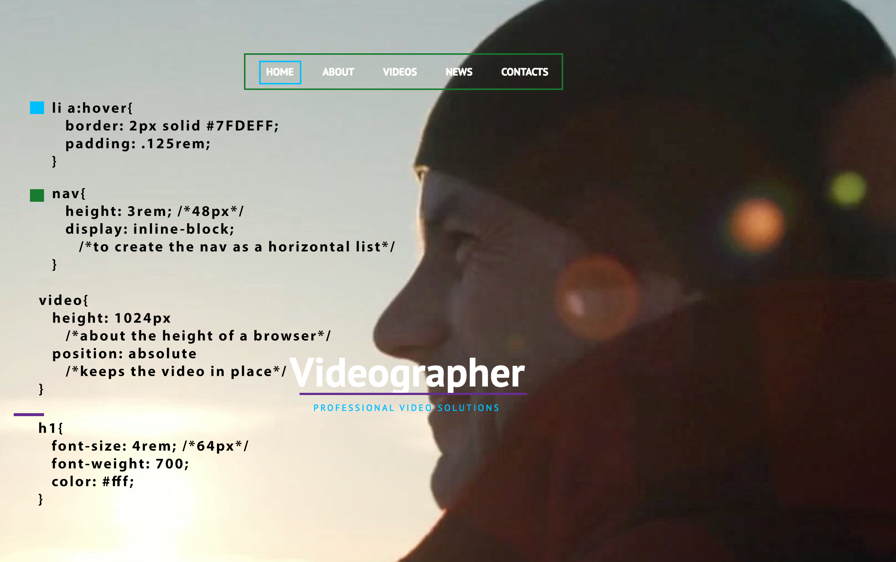
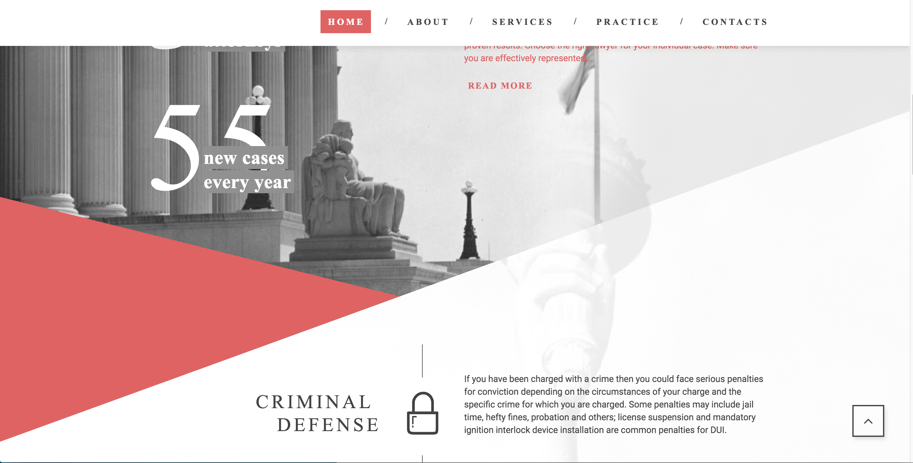

My name is Alexandria, but you can call me Lexx! I am a Houston based web designer and currently studying Web Design and Development at Full Sail University! I am also enrolled in Free Code Camp working for my Front End Development Certificate and my Full Stack Development Certificate. This allows me to get extra practice and develop my skills in different areas. I am excited to update my portfolio as I grow and expand my skills!
Components
Navigation Bar
What I Hope to Learn
I know the basics of creating a nav, but I would like to add animation to my navigation. I like how in the above example it seems to have a 3D effect as you scroll over it.
How Does This Relate To What I Have Learned
I feel like this would help step up my css skills. I will be able to create new lists and navs with animation to seperate them from others. I currently know some of the animation properties and this would help me practice.
Footer
What I Hope to Learn
I want to learn how to add the CTA of the newsletter and give it the appearance of being outside normal boundaries. I like how it overlaps the two sections and I also like creating images that stay in position as you scroll.
How Does This Relate To What I Have Learned
I know how to create the basic elements within this footer example. I just want to learn to elevate my CSS styling to create out of the normal constraints of sectioning.
Featured
Video Background Header/Hero Image
What I Want to Learn
I want to learn how to add a video background instead of using a hero image on a page. This would create an attention grabbing landing page and allow me to use videos in future website.
How Does This Relate To What I Have Learned
I have learned how to add videos and how to create hero images. Now I have to combine them both efficently to create this look and also see how to change the video to image if used for mobile so that It does not overload mobile or handheld devices.
How I Will Build This
Create the component as a Header
Create a div with an ID to add the video to
Create a nav within the header to contain the links
create a ul with li as the navigation links
add video to the div
Css styling to make the video cover the full page
Style Guide

li a:hover{ border: 2px solid #7FDEFF;
padding: .125rem; }
nav{ height: 3rem; /*48px*/
display: inline-block;
/*to create the nav as a horizontal list*/ }
video{ height: 1024px
/*about the height of a browser*/
position: absolute
/*keeps the video in place*/ }
h1{ font-size: 4rem; /*64px*/
font-weight: 700;
color: #fff; }
Features Style 1
What I Want to Learn
I like how each circle overlaps and also highlights when you hover over to know which information is being read or focused.
How Does This Relate To What I Have Learned
I want to learn the different transitions used in this feature set to also enhance my CSS skills. I also want to learn how to properly position elements on the page. I sometimes have trouble with relative, absolute, etc and this would help practice the positioning.
Features Style 2
What I Want to Learn
I like the overall square look an feel. I also want to learn how to create the features to enlarge the image on hover and to perfectly add the button in that position so it flows well together.
How Does This Relate To What I Have Learned
I want to learn different styles of decoration to add to my work. Along side with the circular feature set above, I want to learn how to create a rectangular look.s

Angled Lines
What I Want to Learn
This is something I have been wanting to try for some time now. I am not entirely sure if this is a css animation or just position, but with time I want to be able to create these type of angled lines with ease.
How Does This Relate To What I Have Learned
It will allow me to once again enhance my work to be able to apply different touches depending on the subject of work. I personally enjoy the look of the lines and It could be used to draw the eyes attention and direction of the user.